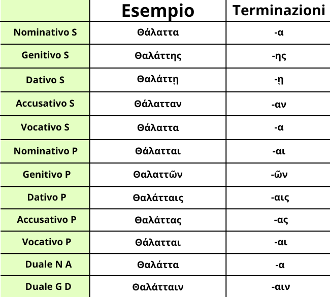

La declinazione per Alfa Impuro Breve femminile è una forma della prima declinazione.
La particolarità dei sostantivi in Alfa Impuro sta nel fatto che, non essendoci ε, ι o ρ, le desinenze cambiano, sostituendo l'α con una η. Nel caso specifico dei sostantivi in Alfa Impuro Breve la η sostituisce l'α ma solo per i casi genitivo e dativo singolare, ritornando poi regolare per il plurale e il duale.
In ordine da Nominativo a Vocativo, da Singolare a Duale è: -α, -ης, -ῇ, -αν, -α, -α, -αι, -ῶν, -αις, -ας, -αι, -αιν.
Noterai forse qualche cosa particolare: L'η da sola si presenta sia al nominativo che al vocativo, questo perché sono casi diretti. L'ῶν la si trova sempre così in qualsiasi genitivo plurale della prima declinazione, indifferentemente da accento o altre particolarità. Quindi ricordati bene queste cose, soprattutto la seconda, poiché tornano molto utili nella traduzione di frasi o versioni.